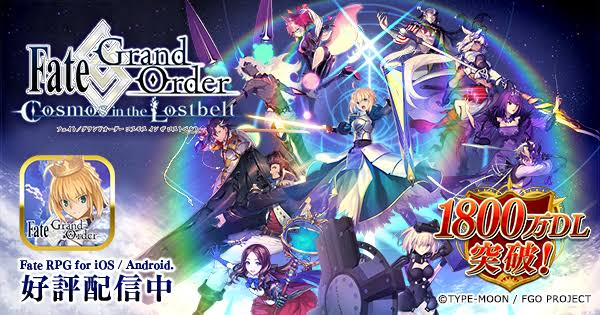

FateGrandOrder
FateGrand Orderは、ゲームブランドTYPE-MOONによるゲーム作品Fate/stay nightを元として製作されているスマートフォン専用ロールプレイングゲーム。略称は「Fate/GO」もしくは「FGO」。2017年「第21回文化庁メディア芸術祭」審査委員会推薦作品。「日本ゲーム大賞 2018」優秀賞受賞作品。「ファミ通アワード2017」「同2018」優秀賞受賞作品などを受賞している。2018年からアーケード版が出ている。
あらすじ 歴代TYPE-MOON作品同様、世界の真なる理を魔術と魔術師が掌握しつつ、Fate/EXTR』で描かれたような科学技術を研鑽する者たちも加わり、科学と魔術が交錯する世界観を前提として物語は始まる。また本作のストーリーはメインステージだけでなく期間限定イベントも含め、現実の時間軸とストーリー内の時系列を連動させるという手法を取って展開されていく。

製作者：原昌大
トップへ戻る